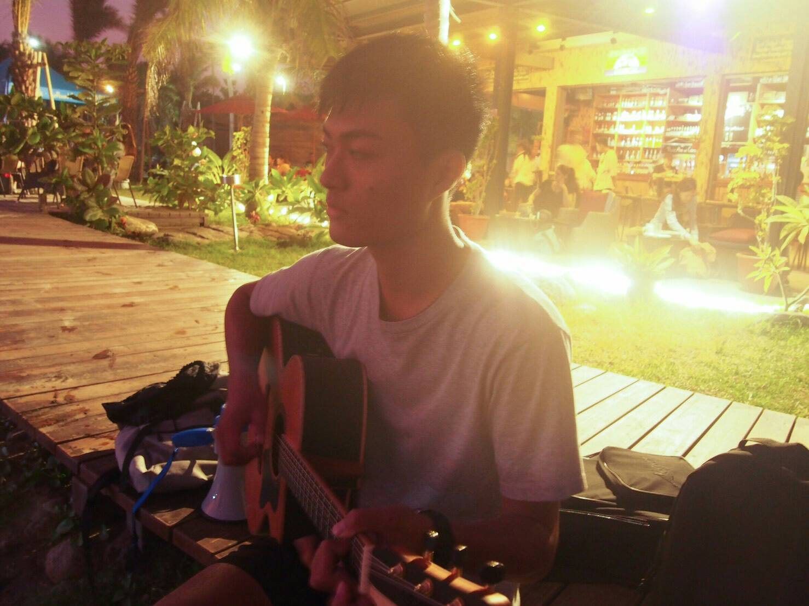

我的學經歷?
我小時候都在澎湖讀書，在澎湖完成了我大學以前的學業，國中升高中時，因為發現自己對於商業類有高度的興趣，所以沒有選擇升上一般高中，而是選擇了職業學校的商業經營科，從此開始了學商之路。
而在高中畢業之後，在大學的選擇上，也是理所當然的選擇了商業類科，就是國立高雄科技大學的財務管理系，在進入財務管理系之後，學習到了很多有關財管的專業知識，也學習到很多理財工具的運用，還考取了很多有關證券業的證照，學習到的知識都是一輩子受用無窮的!
大三的時候選擇加入了系學會，擔任的是公關的職位，和大家一起辦了許多活動，還曾經擔任過活動的主持人哦!
除了讀書以外我還會做甚麼
我從小學一年級就開始練羽球，密集訓練到國中三年級，曾經擔任國小羽球校隊的隊長，而現在也是高科羽球隊的隊員之一

我也很喜歡音樂，在高中三年級的時候踏上了吉他自學之路，平常沒事的時候都會彈吉他來打發時間，練到現在也算是小有成果，和女朋友組了一個小小樂團
升上大學之後，同學因為看上我的身高，於是就邀請我一起加入了財管系籃，加入了財管系籃之後，認識了很多學長和朋友，同時也學會了很多團隊合作的精神